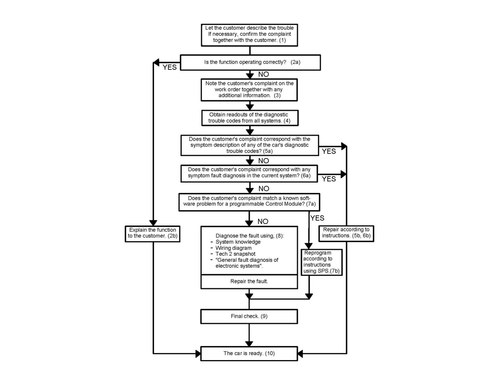

Fault Diagnosis Strategy For Electronic Systems
Fault diagnosis strategy for electronic systems
1. The customer's description of the problem constitutes a basis for the fault diagnosis strategy.
If necessary, the customer must demonstrate the trouble on the car to avoid misunderstandings.
2. In certain cases, the function may be correct.
2.a. Good product knowledge is required to decide this.
2.b. If the function is correct, this must be explained to the customer.
3. If the function is judged to be faulty, the car should be repaired.
Saab's fault diagnosis strategy assumes that the technician is familiar with the customer's description of the problem. So note the customer's complaint and any other observations on the job sheet.
4. The technician obtains a readout of the diagnostic trouble codes from all systems.
A malfunction in one system can often be caused by a fault in another system.
5. The car may contain diagnostic trouble codes which are secondary faults or which have been incorrectly generated.
5.a. Compare the customer complaint with the symptom description for the various diagnostic trouble codes. WIS has a quick search function for this purpose.
5.b. If the symptom description for a diagnostic trouble code matches the customer's complaint, this diagnostic trouble code is probably caused by the primary fault.
Repair as per instructions.
6. If there is no match with diagnostic trouble codes or symptoms, the technician must diagnose the fault himself.
6.a. Search in WIS under fault diagnosis for symptoms in the system where the fault exists. Also check whether there is a TSB/MI in force.
6.b. If the symptom description in the current system matches the complaint, the right fault diagnosis description has probably been found.
Repair as per instructions.
7. Certain fault symptoms can be remedied by reprogramming the control module.
7.a. Does the customer complaint stem from a known software problem in a programmable control module?
7.b. Reprogram the control module following the instructions in SPS.
8. If there is no match with diagnostic trouble codes or symptoms, the technician must diagnose the fault himself.
Good technical product knowledge is required to solve this type of problem.
9. A final check must be carried out after the repair.
10. The car is ready.
General fault diagnosis in electronic systems
Control module
When the control module is supplied with current, the processor in it is tripped. The processor then reads the instructions stored in the control module's memory.
The control module is programmed to read the inputs and activate the outputs. If the control module program is faulty, the diagnostic trouble code "Internal Control Module Fault" will be generated.
The control module must be supplied with current before the system will function. The control module is supplied with current and the processor tripped when the control module can be contacted by the diagnostics instrument.
Outputs
The purpose of the system is to control a number of functions by means of various actuators, such as an injector or lamp. For the system to be capable of performing its functions, it must be possible to activate the actuators. For this reason the actuators must be connected to the control module and have a proper power supply or ground connection.
The performance of the majority of the actuators can be checked with the diagnostics instrument.
Inputs
A condition for the control module's capability of controlling its actuators is that the system's sensors supply it with correct values.
Sensor performance can be checked with the diagnostics instrument.